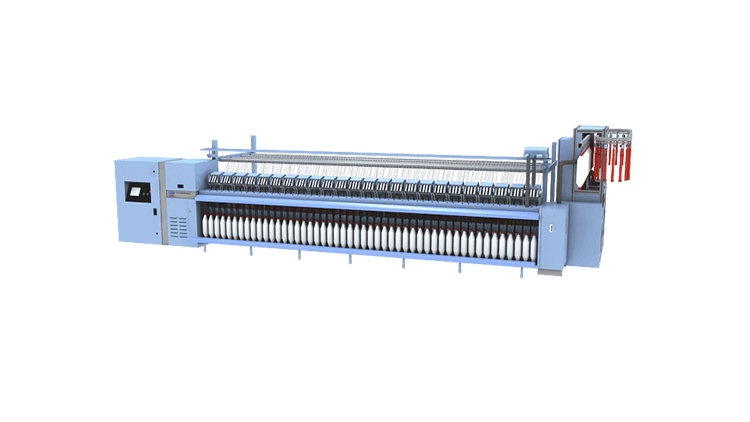
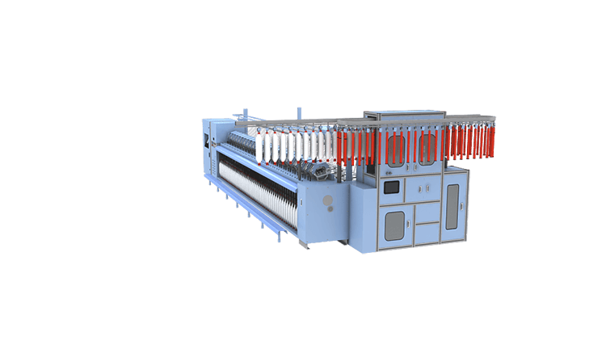
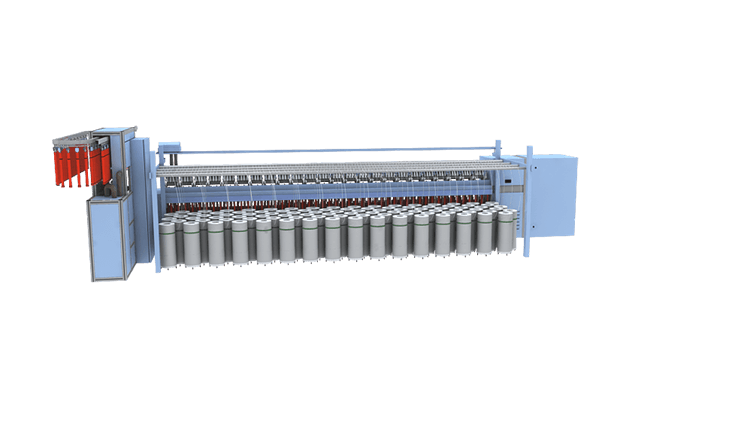
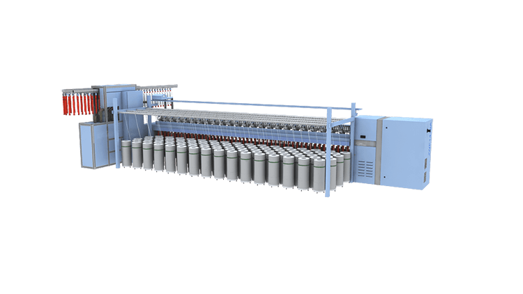
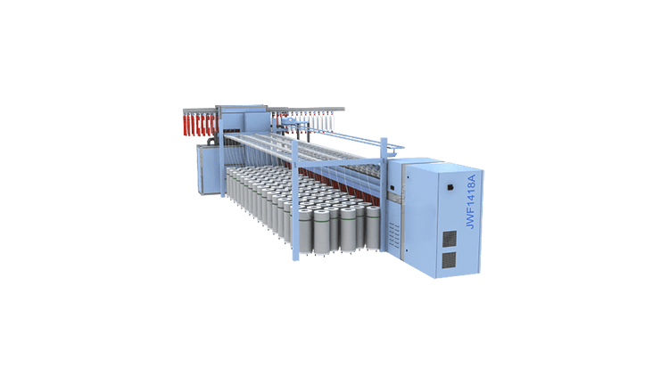
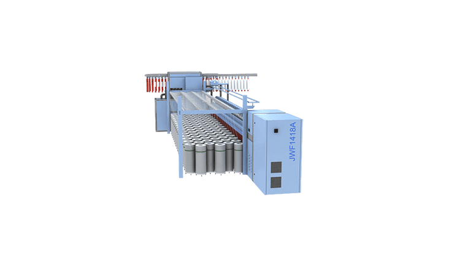
 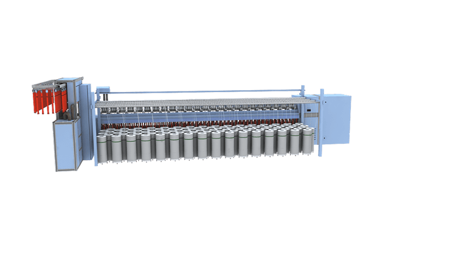
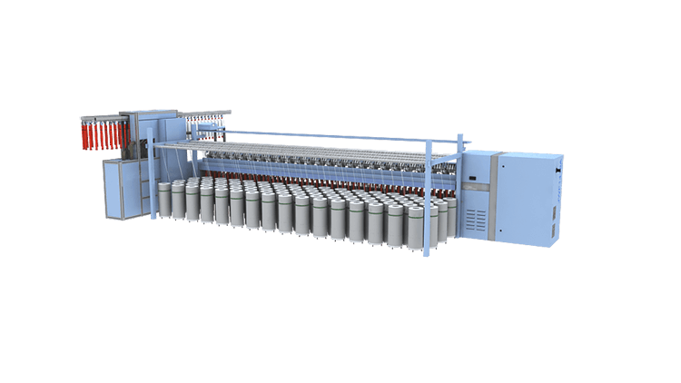
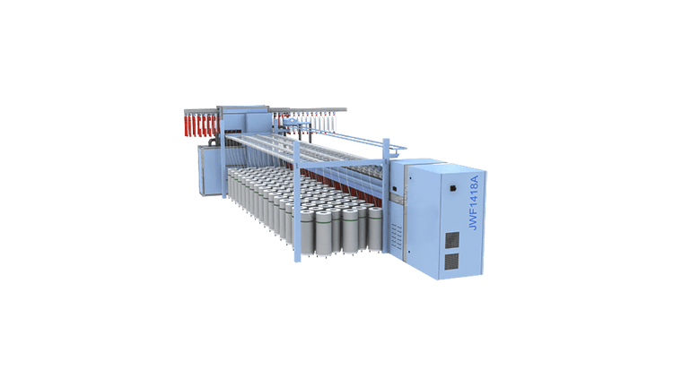
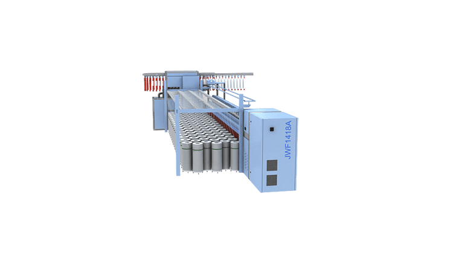
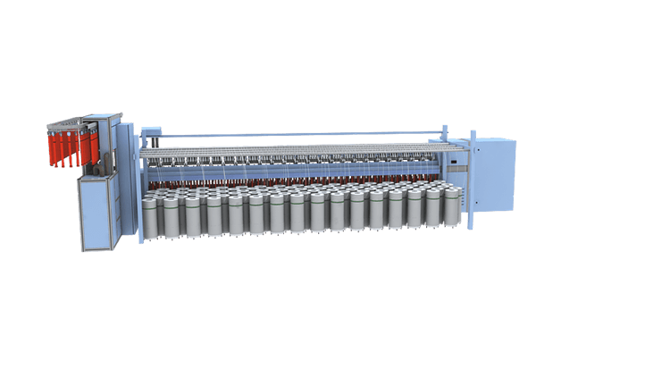
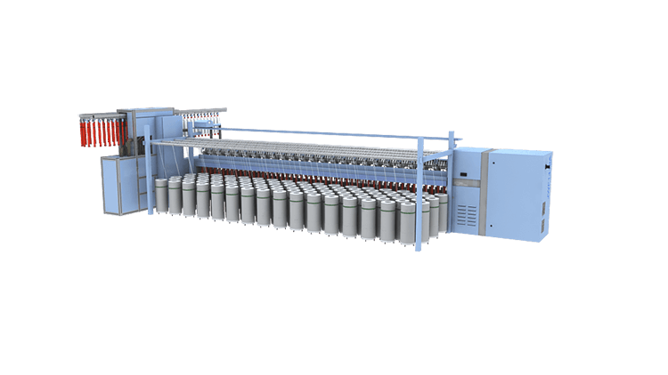
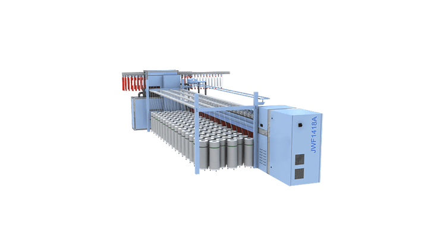
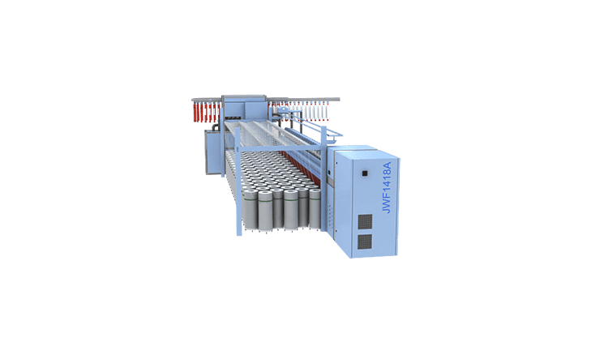

-

-

吹风嘴可以有效清除车面上的飞花。避免了粗纱上飞花的附入，减少了纱疵，为纺制高档产品创造了积极条件。
采用间歇式回转绒带上下清洁器，置配以机后的吸尘装置，有效清除上龙筋台面的飞花和下清洁器梳片刮下的绒带花以及前罗拉处的积花。

400条筒
500条筒

JWF1458型粗纱机采用积极式喂给装置，导条辊采用铝合金型材制成，可以配置Φ400、Φ500棉条筒。变换链轮可调节导棉辊与后罗拉之间的张力牵伸。
尾纱清除、尾纱管筛选、空满管交换三个功能在粗纱机上加以集成，在同一节拍下，按顺序完成功能，运行高效。
由于尾纱清除、尾纱管筛选、空满管交换集成装置设计，更加适合用户多品种纺纱，而且JWF9562A型粗细联输送 系统不再需要另外设计尾纱库，使整个系统更加简洁，为用户节约了成本。
纺完的满纱通过下拖链小滑车输送到机器后面，以保证车前可以开始下一落纺纱，车后空满管交换，相互不受影响，提高效率。 下拖链分为前后两排，分别从车头车尾进入，减少了进入时间，下拖链采用采用多个带自锁功能的电机驱动，下拖链停位和保 持位置准确，吊锭与下拖链上筒管的对中度。

该机具备网络功能，可实现用户网络管理。人机界面动态参数调整使得品种更换方便快捷。
控制系统数据库中可以储存不同品种的成熟纺纱工艺，并且全数字化的控制系统可保证将最佳调整数据重复使用；只保留牵伸变换齿轮，其余变换齿轮均被取消，用人机界面输入相关工艺参数。
生产管理对生产过程中的班次、品种、产量进行管理操作，也可查询日报、周报、月报信息。能够满足生产中的各项需要。